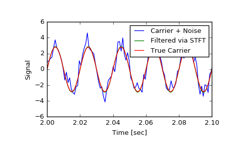
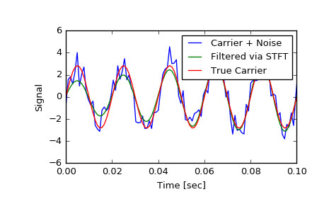

scipy.signal.istft¶
-
scipy.signal.istft(Zxx, fs=1.0, window='hann', nperseg=None, noverlap=None, nfft=None, input_onesided=True, boundary=True, time_axis=-1, freq_axis=-2)[source]¶ Perform the inverse Short Time Fourier transform (iSTFT).
Parameters: Zxx : array_like
STFT of the signal to be reconstructed. If a purely real array is passed, it will be cast to a complex data type.
fs : float, optional
Sampling frequency of the time series. Defaults to 1.0.
window : str or tuple or array_like, optional
Desired window to use. See
get_windowfor a list of windows and required parameters. If window is array_like it will be used directly as the window and its length must be nperseg. Defaults to a Hann window. Must match the window used to generate the STFT for faithful inversion.nperseg : int, optional
Number of data points corresponding to each STFT segment. This parameter must be specified if the number of data points per segment is odd, or if the STFT was padded via
nfft > nperseg. If None, the value depends on the shape of Zxx and input_onesided. If input_onesided is True,nperseg=2*(Zxx.shape[freq_axis] - 1). Otherwise,nperseg=Zxx.shape[freq_axis]. Defaults to None.noverlap : int, optional
Number of points to overlap between segments. If None, half of the segment length. Defaults to None. When specified, the COLA constraint must be met (see Notes below), and should match the parameter used to generate the STFT. Defaults to None.
nfft : int, optional
Number of FFT points corresponding to each STFT segment. This parameter must be specified if the STFT was padded via
nfft > nperseg. If None, the default values are the same as for nperseg, detailed above, with one exception: if input_onesided is True andnperseg==2*Zxx.shape[freq_axis] - 1, nfft also takes on that value. This case allows the proper inversion of an odd-length unpadded STFT usingnfft=None. Defaults to None.input_onesided : bool, optional
If True, interpret the input array as one-sided FFTs, such as is returned by
stftwithreturn_onesided=Trueandnumpy.fft.rfft. If False, interpret the input as a a two-sided FFT. Defaults to True.boundary : bool, optional
Specifies whether the input signal was extended at its boundaries by supplying a non-None
boundaryargument tostft. Defaults to True.time_axis : int, optional
Where the time segments of the STFT is located; the default is the last axis (i.e.
axis=-1).freq_axis : int, optional
Where the frequency axis of the STFT is located; the default is the penultimate axis (i.e.
axis=-2).Returns: t : ndarray
Array of output data times.
x : ndarray
iSTFT of Zxx.
See also
stft- Short Time Fourier Transform
check_COLA- Check whether the Constant OverLap Add (COLA) constraint is met
Notes
In order to enable inversion of an STFT via the inverse STFT with
istft, the signal windowing must obey the constraint of “Constant OverLap Add” (COLA). This ensures that every point in the input data is equally weighted, thereby avoiding aliasing and allowing full reconstruction. Whether a choice of window, nperseg, and noverlap satisfy this constraint can be tested withcheck_COLA, by usingnperseg = Zxx.shape[freq_axis].An STFT which has been modified (via masking or otherwise) is not guaranteed to correspond to a exactly realizible signal. This function implements the iSTFT via the least-squares esimation algorithm detailed in [R242], which produces a signal that minimizes the mean squared error between the STFT of the returned signal and the modified STFT.
New in version 0.19.0.
References
[R241] Oppenheim, Alan V., Ronald W. Schafer, John R. Buck “Discrete-Time Signal Processing”, Prentice Hall, 1999. [R242] (1, 2) Daniel W. Griffin, Jae S. Limdt “Signal Estimation from Modified Short Fourier Transform”, IEEE 1984, 10.1109/TASSP.1984.1164317 Examples
>>> from scipy import signal >>> import matplotlib.pyplot as plt
Generate a test signal, a 2 Vrms sine wave at 50Hz corrupted by 0.001 V**2/Hz of white noise sampled at 1024 Hz.
>>> fs = 1024 >>> N = 10*fs >>> nperseg = 512 >>> amp = 2 * np.sqrt(2) >>> noise_power = 0.001 * fs / 2 >>> time = np.arange(N) / float(fs) >>> carrier = amp * np.sin(2*np.pi*50*time) >>> noise = np.random.normal(scale=np.sqrt(noise_power), ... size=time.shape) >>> x = carrier + noise
Compute the STFT, and plot its magnitude
>>> f, t, Zxx = signal.stft(x, fs=fs, nperseg=nperseg) >>> plt.figure() >>> plt.pcolormesh(t, f, np.abs(Zxx), vmin=0, vmax=amp) >>> plt.ylim([f[1], f[-1]]) >>> plt.title('STFT Magnitude') >>> plt.ylabel('Frequency [Hz]') >>> plt.xlabel('Time [sec]') >>> plt.yscale('log') >>> plt.show()

Zero the components that are 10% or less of the carrier magnitude, then convert back to a time series via inverse STFT
>>> Zxx = np.where(np.abs(Zxx) >= amp/10, Zxx, 0) >>> _, xrec = signal.istft(Zxx, fs)
Compare the cleaned signal with the original and true carrier signals.
>>> plt.figure() >>> plt.plot(time, x, time, xrec, time, carrier) >>> plt.xlim([2, 2.1]) >>> plt.xlabel('Time [sec]') >>> plt.ylabel('Signal') >>> plt.legend(['Carrier + Noise', 'Filtered via STFT', 'True Carrier']) >>> plt.show()
Note that the cleaned signal does not start as abruptly as the original, since some of the coefficients of the transient were also removed:
>>> plt.figure() >>> plt.plot(time, x, time, xrec, time, carrier) >>> plt.xlim([0, 0.1]) >>> plt.xlabel('Time [sec]') >>> plt.ylabel('Signal') >>> plt.legend(['Carrier + Noise', 'Filtered via STFT', 'True Carrier']) >>> plt.show()
